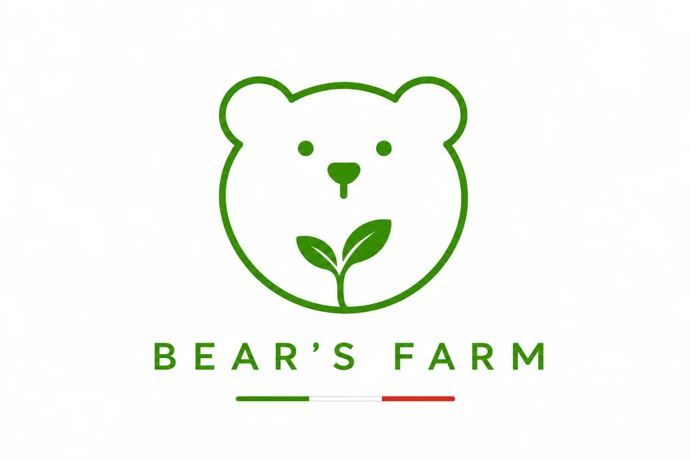
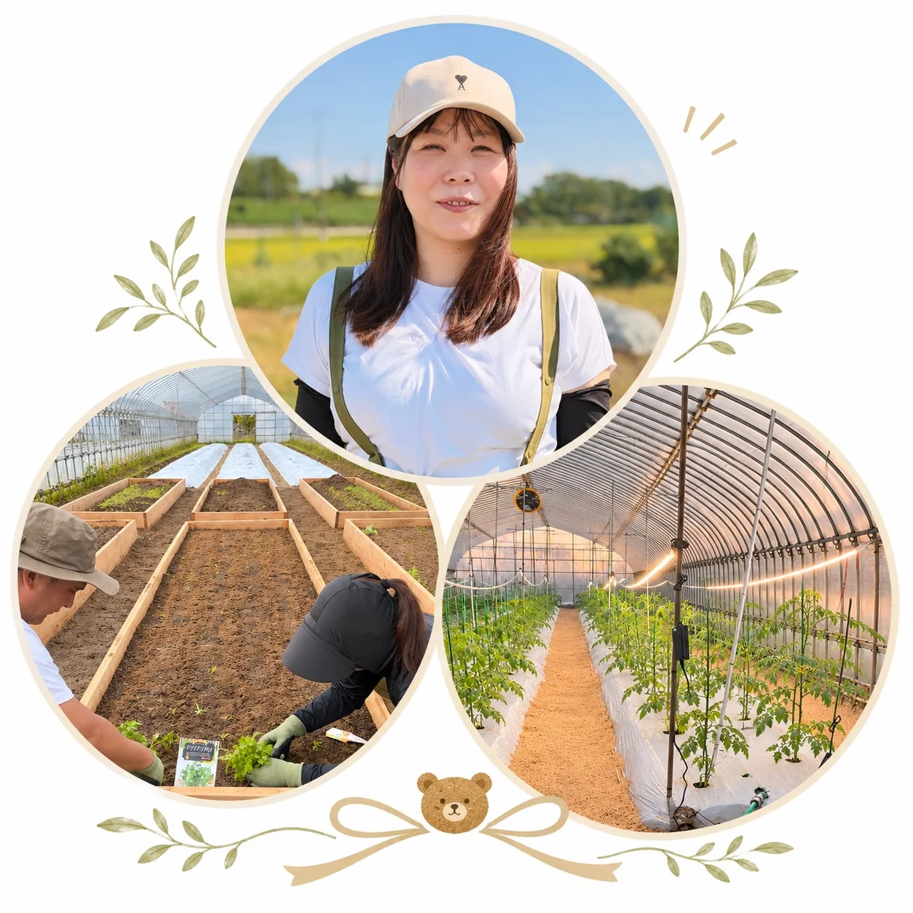

OUR THOUGHTS畑と、食卓と、あなたを。
ひと目の「かわいい」が、
毎日の「おいしい」に。
ころんとした形。思わず見とれる色。
ふわっと広がる、摘みたての香り。
野菜を選ぶ時間も、料理をする時間も、
食卓を囲む時間も、ちょっとうれしくなるように。
土の豊かさを大切に、野菜本来のおいしさを引き出すこと。安心して選んでいただけるよう、誠実に育てること。
野菜の、その先にある笑顔のために。
新潟の畑から、小さな幸せをお届けします。

NIIGATA NISHI-KUABOUT US / OUR STORY

はじめまして、Bear’s Farmです。
新潟市西区で、トマトや西洋野菜、ハーブを育てている小さな農園です。
大切にしているのは、土づくり、品種選び、野菜が育つ環境。昔ながらの知恵と新しい技術を取り入れ、一つひとつ丁寧に育てています。
レストランの一皿にも、毎日の食卓にも。少し珍しい野菜のおいしさや香りを、もっと身近にお届けしたいと思っています。
ころんとした形。思わず見とれる色。
ふわっと広がる、摘みたての香り。
野菜を選ぶ時間も、料理をする時間も、
食卓を囲む時間も、ちょっとうれしくなるように。
土の豊かさを大切に、野菜本来のおいしさを引き出すこと。安心して選んでいただけるよう、誠実に育てること。
野菜の、その先にある笑顔のために。
新潟の畑から、小さな幸せをお届けします。